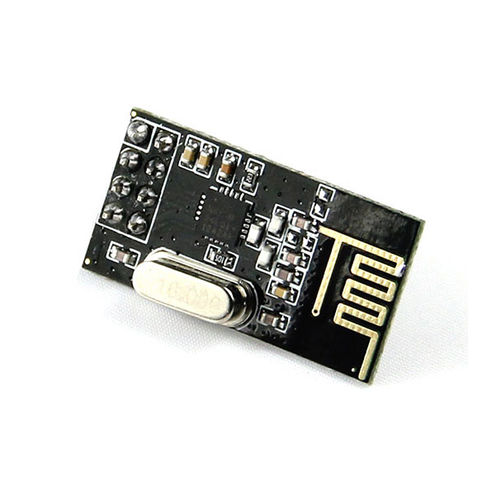
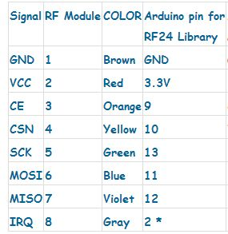
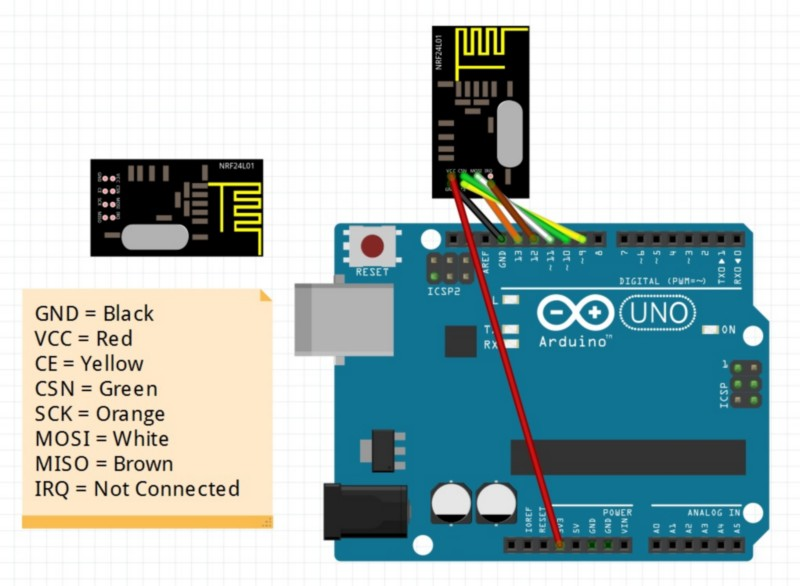

This week lecture is to create a wired or wireless network between 2 processor I have some nRF24L01 module so I decide to use it whit the Satsha kit and make a wireless communication between them.

Reported from the web:
The nRF24L01 is a single chip 2.4GHz transceiver with an embedded baseband protocol engine (Enhanced ShockBurst™), designed for ultra low power wireless applications. The nRF24L01 is designed for operation in the world wide ISM frequency band at 2.400 - 2.4835GHz. An MCU (microcontroller) and very few external passive components are needed to design a radio system with the nRF24L01.The nRF24L01 is configured and operated through a Serial Peripheral Interface (SPI.) Through this interface the register map is available. The register map contains all configuration registers in the nRF24L01 and is accessible in all operation modes of the chip.The embedded baseband protocol engine (Enhanced ShockBurst™) is based on packet communication and supports various modes from manual operation to advanced autonomous protocol operation. Internal FIFOs ensure a smooth data flow between the radio front end and the system’s MCU. Enhanced Shock-Burst™ reduces system cost by handling all the high-speed link layer operations.The radio front end uses GFSK modulation. It has user configurable parameters like frequency channel,output power and air data rate.The air data rate supported by the nRF24L01 is configurable to 2Mbps. The high air data rate combined with two power saving modes makes the nRF24L01 very suitable for ultra low power designs.Internal voltage regulators ensure a high Power Supply Rejection Ratio (PSRR) and a wide power supply range.
Specification
Power supply :1.9V~3.6V
Working current:13.5mA at 2Mbps / 11.3mA at 0dBm output power
IO counts :8
Sensitivity :-85dBm at 1Mbps
Emission distance :70~100 meter at 256kbps
Data rate :256kbps / 1Mbps / 2Mbps
Commuinitcation mode :Enhanced ShockBurst TM / ShockBurst TM
Working mode :Power Down Mode / Standby Mode / RX Mode / TX Mode
Temperatures :Operating:-40°C ~ 85°C / Storage:-40°C ~ 125°C
This module use the SPI interface so I have to use the MOSI and MISO channel on the satshakit, here you can find the pin connection schematic.

Here you can also find a fritzing img for the connection ( i use arduino uno as base for the project in fritzing because the shatshakit is not yet implemented), the file is in the archive of the lecture at the end of the page.

IMPORTANT!!
the nRF24L01 module need a 3.3v vcc to work so if you are using the usb to power the arduino connect it to the proper line on the header (arduino board have already a voltage regulator for 3.3v).
In my case the Satshakit doesn't have a voltage regulator and the chip works at 5v so I have to put this in my circuit.
the data pin on the nRF24L01 are 5v tolerant so you don't have to worry about this. In this test I program a board to be the sender and a board to be the receiver.here the code of the transmitter
Basically the sketch sent the "message" from the transmitter to the receiver.
the message is send via serial interface (usb) at the transmitter, the transmitter send it to the receiver.
the receiver "listen" the message and send it to the serial(usb).
i use a virtual com (Putty) to send and receive the data from the UART of the satshakitHere homepage putty
Here i show the settin of putty for open the serial comunication whit the ftdi cable connected to the satshakit